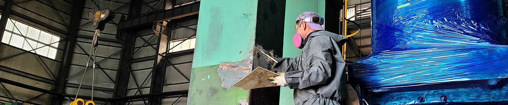
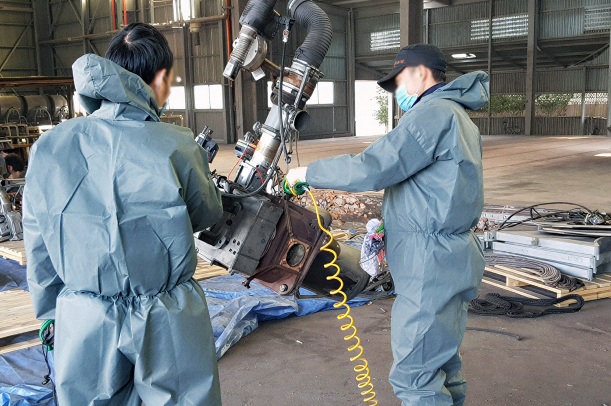

단순 페인트 작업이 아닌
오랜 사용으로 기기에 붙은 녹 제거부터 기존 페이트 제거 후 재도색 하는 작업에 들어갑니다.
산업 재해 방지로 안전 확보
설비에 쌓인 이물질 제거로 기기 효율 증가
정기적인 관리로 유지보수 비용 감소
이물질 제거 청소로 인한 불량 감소
청소 과정을 확인 할 수 있습니다
사진과 영상 갤러리에서 더 많은 청소 과정을 확인 할 수 있습니다